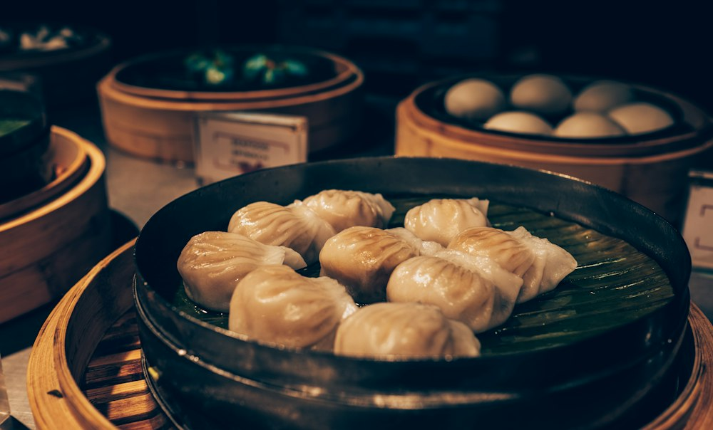
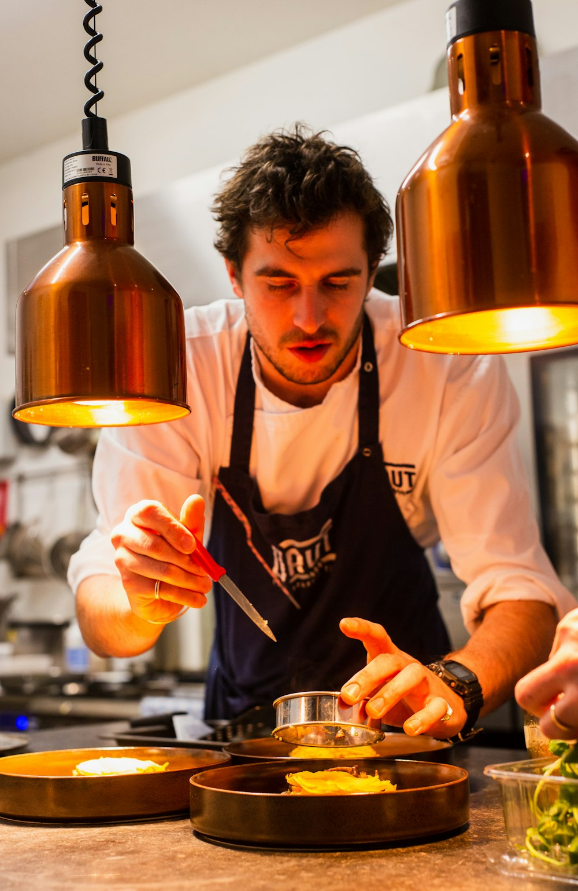
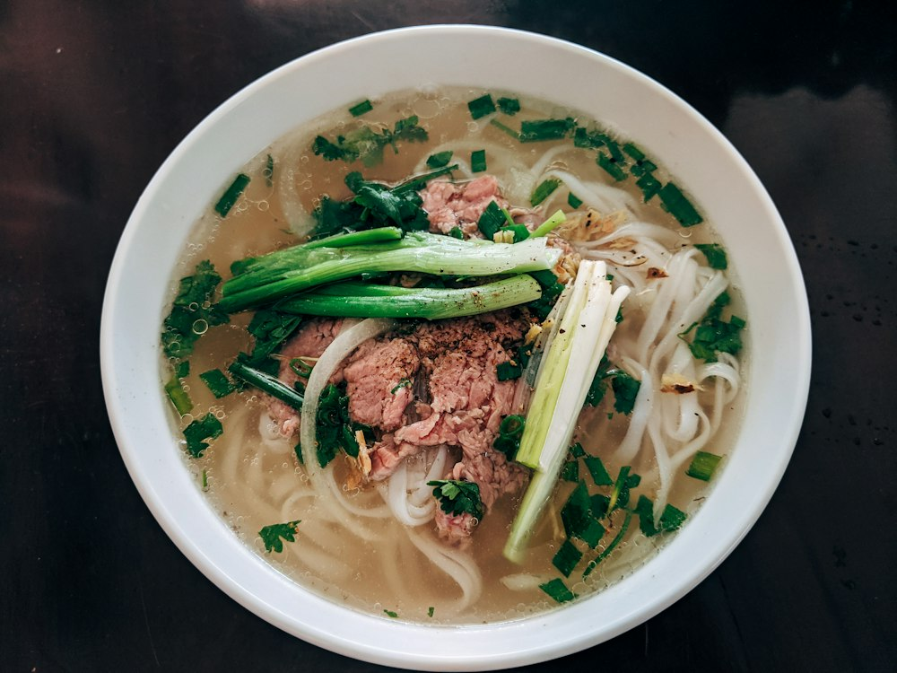
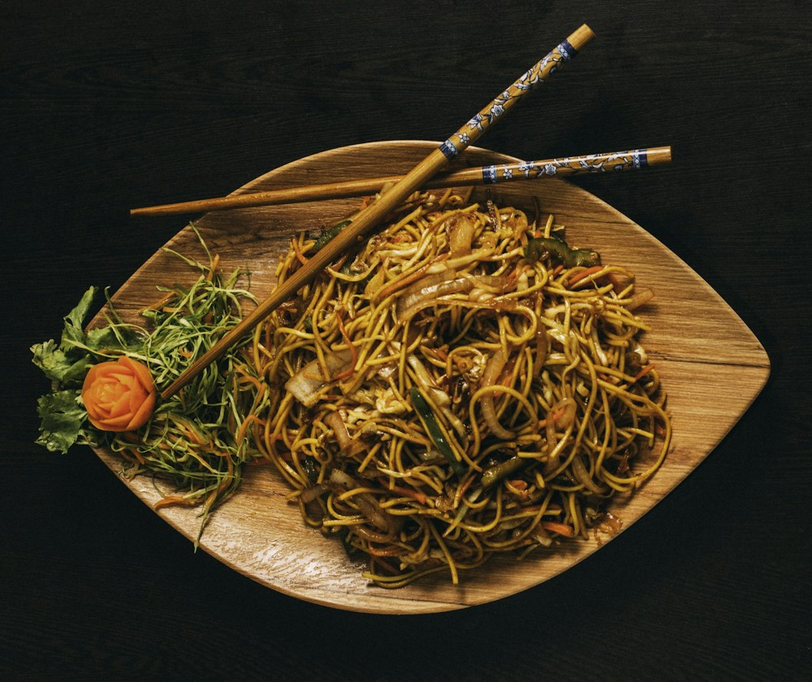
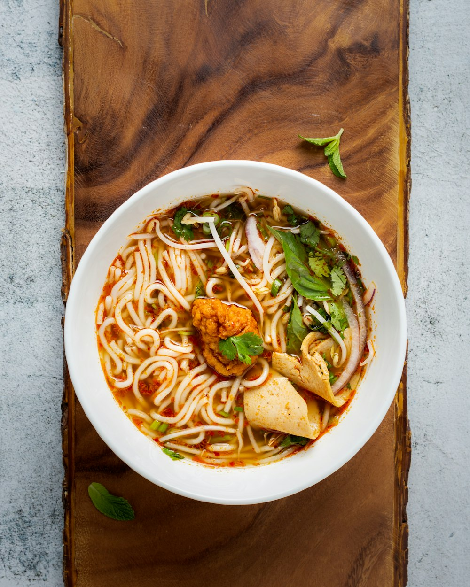

01

水晶虾饺皇
十三道褶皱是茶楼师傅的功底，薄皮里藏着整颗弹牙的鲜虾，是"一盅两件"里永远的主角。
★ 风味：清鲜弹嫩 | 推荐度 98%


十三道褶皱是茶楼师傅的功底，薄皮里藏着整颗弹牙的鲜虾，是"一盅两件"里永远的主角。

云吞即广东人的馄饨。薄皮裹着鲜美肉馅，浮在清甜的上汤里，撒一把葱花韭黄，鲜得恰到好处。

金黄酥脆的外皮下锁着丰盈肉汁，趁热一口咬下，"咔嚓"一声满嘴留香，是街巷里最解馋的美味。

好虾只需白灼。沸水里一番翻滚，虾身弯成金黄的弧度，蘸点豉油，鲜甜弹牙全在那一口。

清甜的牛骨汤底，浇在爽滑的粿条上，铺满现汆的鲜牛肉，撒一把芹菜粒，是潮汕人一天的开始的味道。

粒粒分明的米饭裹着鲜虾与蛋香，挤一瓣柠檬提鲜，锅气十足。最简单的一碗饭，最见师傅的功力。

考验镬气的一道经典。细面炒至根根上色、爽滑不腻，配爽脆豆芽，讲究的是"镬气足、色油亮"。

厚切豆腐下锅慢煎至两面金黄，外香内嫩、豆味醇厚，配一碟蘸料，是客家人朴素实在的家常味。

红亮的酸辣汤底，配爽滑的米线、酥香花生与一把香菜，酸得开胃、辣得过瘾，一口下去浑身通透。